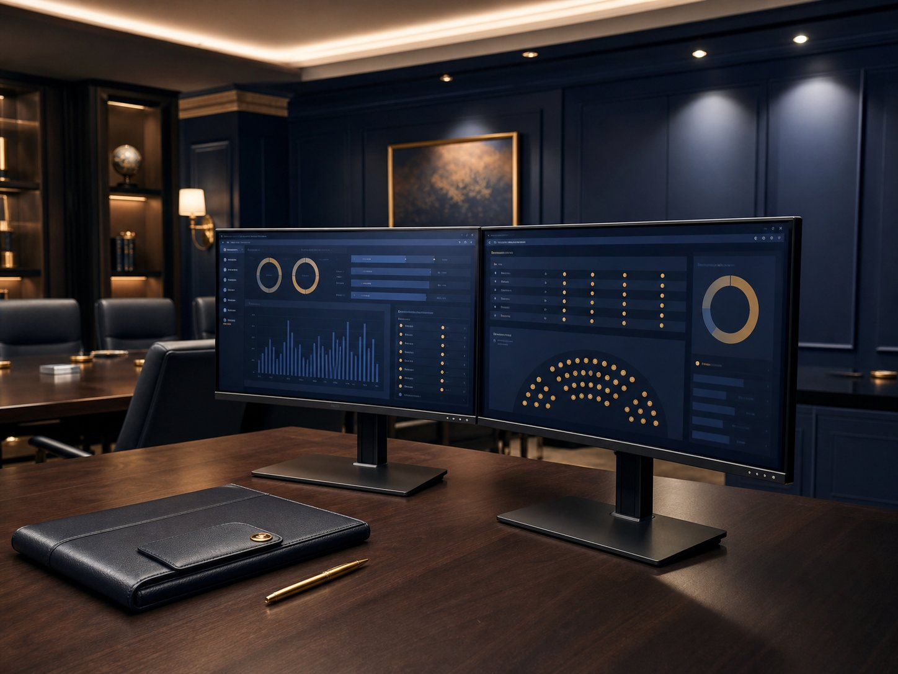

AGMX
Memindahkan PKS yang sudah mapan ke infrastruktur awan terurus dengan pemantauan, sandaran, dan tindak balas insiden yang didokumenkan — lalu kekal sebagai retainer IT berterusan.
0Masa mati hari bekerja
99.5%Sasaran uptime
<4jRTO/RPO
- Migrasi awan dirancang dan dilaksanakan tanpa kegagalan akhir minggu
- Sandaran automatik dan runbook pemulihan pada tempatnya
- Dikekalkan di bawah Foundation untuk pemantauan dan meja bantuan berterusan